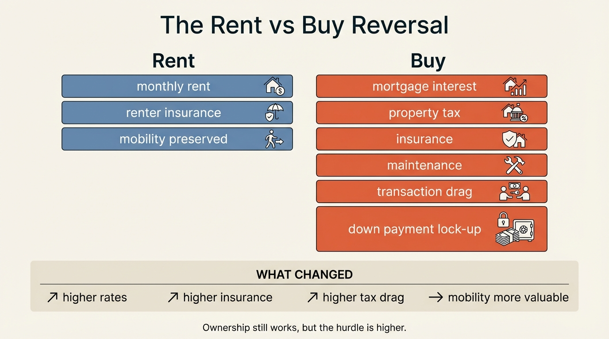
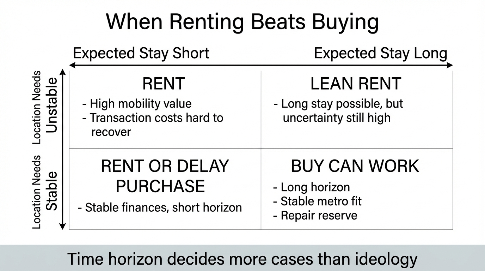

The Rent vs Buy Reversal
For two decades the default household script said ownership was the disciplined path and renting was the temporary path. In a high-rate housing regime that distinction has weakened. Buying still creates long-run upside for some households, but the hurdle is higher because financing cost, insurance, taxes, maintenance, and mobility value have all become larger parts of the decision.
The reversal is not ideological. It is arithmetic. When mortgage rates sit far above the rates embedded in the existing owner base, the monthly carrying cost on a new purchase can detach sharply from the cost of renting a similar property. At the same time, ownership still demands capital outlays that renters do not face in the same way: down payment concentration, transaction costs, repair reserves, tax drag, and the risk that a move within a few years destroys the economics of the purchase. The old ownership premium can therefore flip sign for households with short or uncertain holding periods.
Core thesis: renting has regained economic credibility because the cost stack attached to buying widened faster than the rental cost stack. Ownership still works when the household has a long time horizon, stable location needs, and the balance sheet to absorb illiquidity and upkeep. It fails when buyers import old low-rate assumptions into a market defined by high financing friction and lower mobility tolerance.

Why The Old Rule Worked For So Long
The ownership default emerged from a period in which financing was cheaper, transaction frictions were easier to amortize, and households could reasonably assume that a medium-term hold would allow price appreciation and principal paydown to outrun the costs of entry. Homeownership also provides a hedge against future rent inflation. Sinai and Souleles formalized that point years ago: the owner is not only buying an asset, but locking in future housing consumption. That hedge remains real.
What changed is the price of that hedge. When the mortgage payment on the replacement home moves far above market rent for a comparable unit, the household is no longer comparing rent to principal build-up alone. It is comparing rent to a package of interest expense, property taxes, insurance premiums, maintenance risk, liquidity lock-up, and uncertain resale conditions. Under those terms, ownership has to earn its place again.
What The Current Data Actually Says
Redfin reported on January 22, 2026 that a buyer needed annual income of roughly $111,000 to afford the typical U.S. home, down modestly from a year earlier but still well above the roughly $76,000 needed to afford the typical apartment. Even if the exact spread moves month to month, the structural message is clear: home purchase affordability remains much weaker than rental affordability for the median household.
The Census Bureau's fourth-quarter 2025 Housing Vacancy Survey showed a rental vacancy rate of 7.2 percent and a homeownership rate of 65.7 percent. Those figures do not describe a rental market in collapse. They describe a market where rental supply has improved enough to keep the renter option alive while ownership remains constrained by financing and inventory. Renting is no longer merely the fallback for households shut out of ownership. In many markets it is the lower-friction choice even for households that could buy.
Supply data reinforces that reading. The Census Bureau's January 2026 new home sales release showed 476,000 new houses for sale, equal to 9.7 months of supply at the prevailing sales rate. That does not mean ownership became cheap. It means builders still need incentives to clear inventory. The ownership market is functioning, but it is not easy enough to restore the old default assumption that buying dominates on first inspection.
Where Buying Still Wins
Ownership still has strong economics in a narrower set of cases. A long expected stay length matters because transaction costs and financing spread can be amortized across more years. The rent-hedge logic matters more when the household expects to remain in the same metro through multiple rent cycles. Ownership also remains powerful when the balance sheet is strong enough that the home does not become the family's only meaningful asset. The problem is not ownership itself. The problem is ownership financed and governed as if rates, mobility, and repair burden were still operating under a 2013 or 2021 template.
There is also a practical distinction between buying a house and buying one housing regime. A household moving into a stable market with reasonable taxes, manageable insurance, and a long hold period faces a different problem from a household buying into a high-tax, high-insurance, short-tenure metro where career mobility is likely. The phrase rent versus buy sounds universal. The economics are local and household-specific.
Where Renting Now Wins More Often
Renting gains relative attractiveness when three conditions appear together. First, the monthly spread between renting and owning is large. Second, the household values mobility because career, family, or geographic preferences may change within a few years. Third, the household's investable capital has better uses than being concentrated in down payment, closing costs, and post-close repairs. In that setting the renter is not merely delaying adulthood. The renter is keeping optionality.
This matters because optionality itself has become a wealth input. The FHFA's 2024 analysis of the lock-in effect showed how low-rate legacy mortgages reduce turnover and restrict mobility. The flip side is that a renter avoids inheriting that same rigidity. In a labor market where household earnings can change through relocation, hybrid-work redesign, or sector shifts, the flexibility to move without selling an illiquid asset has meaningful economic value.
The common mistake is to compare rent to mortgage principal and ignore the rest of the stack. Property taxes and insurance have risen sharply in many markets. Maintenance is lumpy rather than smooth. Transaction costs are front-loaded. A household that buys at the edge of affordability is not only making a housing choice. It is buying a future claim on cash flow volatility.

A Better Decision Framework
- Model the full owner payment. Include mortgage interest, taxes, insurance, maintenance, HOA dues where relevant, and realistic repair reserves.
- Price the hold period honestly. If the expected stay is uncertain or short, transaction costs matter more than appreciation hopes.
- Count balance-sheet concentration. A down payment can be rational, but it is still a concentration decision in one local asset and one local tax regime.
- Treat mobility as an asset. The ability to move for a better job, lower fixed costs, or better family fit has economic value even if it does not show up in a home equity dashboard.
- Separate symbolic ownership from economic ownership. Many households still buy because buying is coded as progress. That is a social script, not a yield analysis.
This framework usually leads to a more disciplined result. Some households should still buy and hold. Others should rent longer, invest the spread, and preserve relocation freedom. The shift is not that homeownership stopped mattering. The shift is that the burden of proof moved back onto the purchase.
Known, Inferred, And Unknown
| Category | Assessment |
|---|---|
| Known | Purchase affordability remains much weaker than rental affordability for the typical household in the current rate regime. |
| Known | Rental supply improved enough by late 2025 to keep renting economically viable in many markets rather than purely constrained. |
| Known | Homeownership still hedges future rent risk, especially for households with long expected tenure. |
| Inferred | The practical rent-versus-buy decision now depends more on time horizon, mobility value, and full cost accounting than on the old ownership default. |
| Unknown | How quickly a lower-rate regime, if it arrives, would restore the older purchase advantage once taxes, insurance, and maintenance inflation are included. |
The Practical Bottom Line
The rent versus buy reversal does not mean renting always wins. It means ownership no longer deserves a presumption of superiority. Buying is strongest when the household is confident about location, tenure, and repair capacity, and when the ownership stack does not crowd out liquidity or career flexibility. Renting is strongest when the spread is large, the future path is uncertain, or the household values optionality more than forced illiquidity.
That is the harder but cleaner standard. Stop asking whether ownership is culturally desirable. Ask whether this purchase, in this market, on this balance sheet, still produces better expected resilience than renting and investing the difference. For a growing share of households, the honest answer has become no. That is the reversal.
Further Reading Inside The Site
This article connects directly to The Mortgage Lock-In Trap, The 2026 Housing Stall, and One Salary, Three Futures. Those pieces frame why housing should be treated as a balance-sheet system rather than a status purchase.
Source List
Sinai T, Souleles NS. Owner-Occupied Housing as a Hedge Against Rent Risk. NBER Working Paper 9462. 2003.
FHFA. The Geography of the Lock-In Effect: Which MSAs are Most Locked-In?. Published August 30, 2024.
Federal Reserve Board. Survey of Consumer Finances. 2022 survey materials published October 18, 2023.
U.S. Census Bureau. Quarterly Residential Vacancies and Homeownership, Fourth Quarter 2025. Published February 3, 2026.
U.S. Census Bureau and HUD. Monthly New Residential Sales, January 2026. Published March 19, 2026.
Redfin. Affordability Is Improving: Buyers Must Earn $111,000 to Afford the Typical Home, Down 4% From Last Year. Published January 22, 2026.